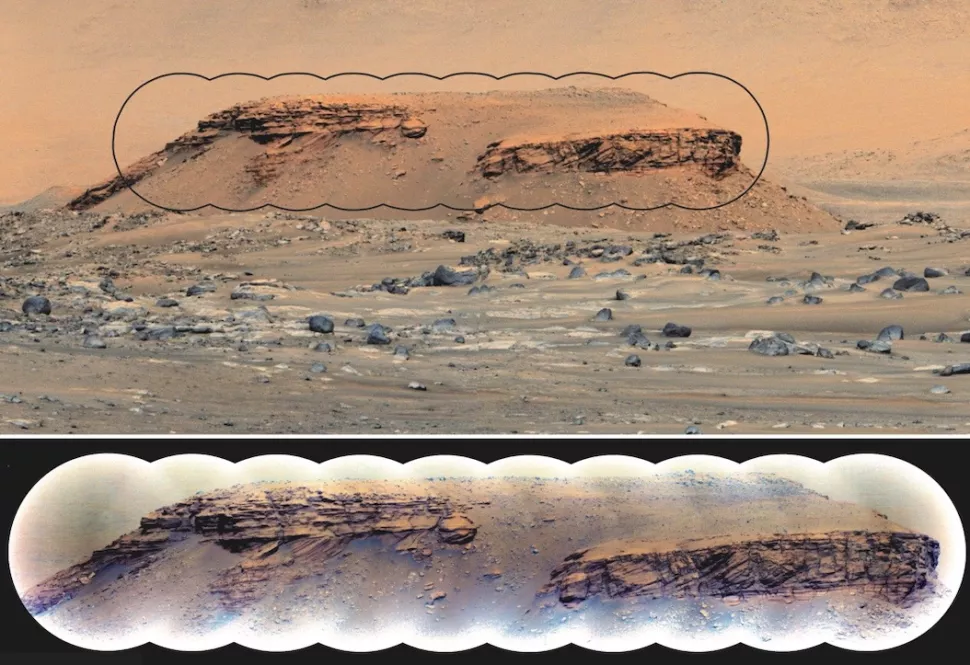
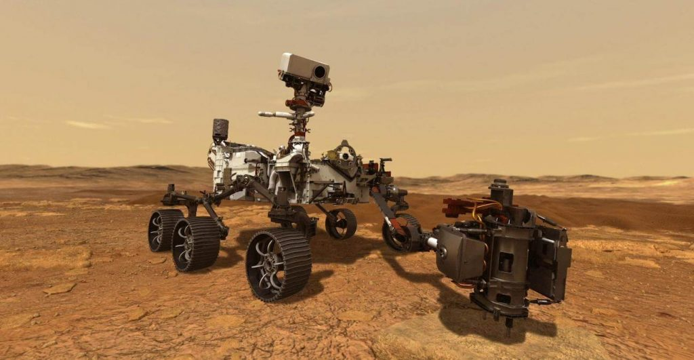
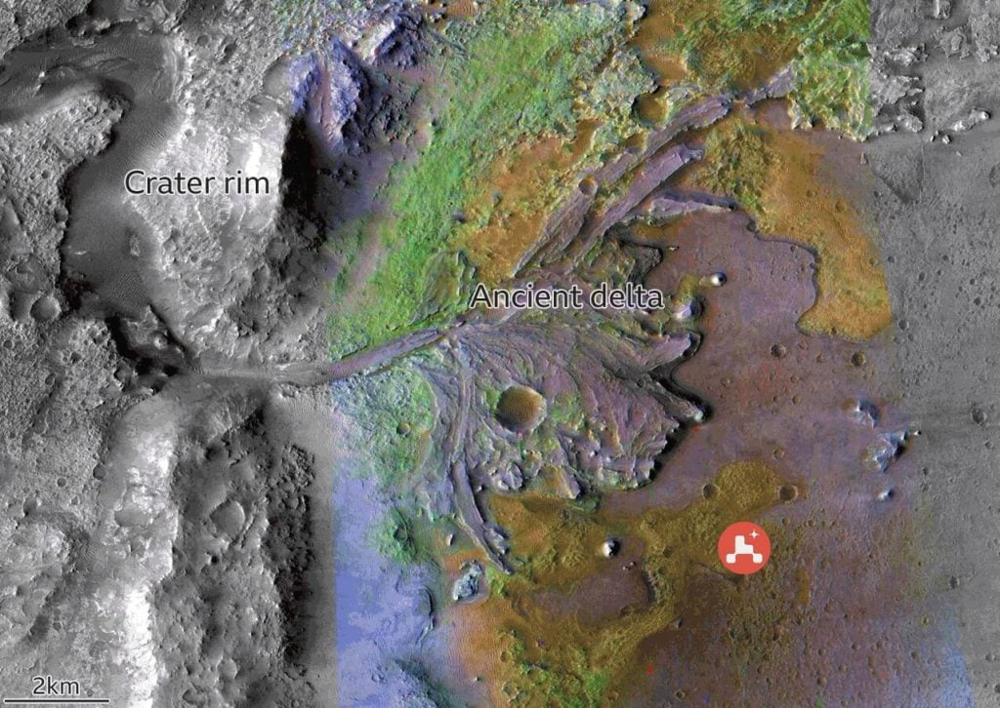
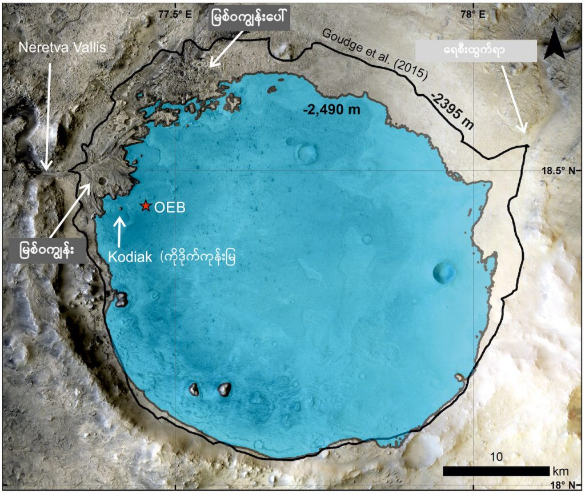

ဒီ ရဇီရို ချိုင့်ဝှမ်းကြီး ထဲမှာ ၂၀၂၀ ခုနှစ်က ပါဆီးဗားရင့်စ် လေ့လာရေးယာဉ် (Perseverance rover) ဆင်းသက်ခဲ့ပြီးနောက် တူးဖော်ရရှိတဲ့ ကျောက်သား နမူနာတွေကို လေ့လာပြီး ပညာရှင် တွေက ကောက်ချက် ချခဲ့ကြတာ ဖြစ်ပါတယ်။
ဒီလို ကာဗွန် အခြေပြု အော်ဂဲနစ် ဒြပ်ပေါင်း (organic compounds) တွေ ရှာဖွေ တွေ့ရှိ ခဲ့ပေမယ့် ဒါဟာ အင်္ဂါဂြိုဟ် ပေါ်မှာ သက်ရှိတွေ ရှိခဲ့တယ် ဆိုတဲ့ တိုက်ရိုက် အထောက်အထားတော့ မဟုတ်ပါဘူးလို့ ဆိုပါတယ်။ ဘာ့ကြောင့်လဲ ဆိုတော့ အော်ဂဲနစ် ဒြပ်ပေါင်းတွေကို သက်ရှိတွေက ထုတ်ပေးသလို သဘာဝ ဓါတု ဖြစ်စဉ်တွေကနေလဲ အချို့သော အခြေခံ အော်ဂဲနစ် ဒြပ်ပေါင်းတွေ ဖြစ်ပေါ် လာနိုင်လို့ပဲ ဖြစ်ပါတယ်။

အခု သုတေသန စာတမ်းကို အမေရိကန် ပြည်ထောင်စုက နာမည်ကျော် Caltech တက္ကသိုလ်က ပညာရှင် တွေ ဦးဆောင်တဲ့ နိုင်ငံတကာ သုတေသီ တွေက တင်ပြခဲ့ကြတာ ဖြစ်ပါတယ်။
ဒီ ပညာရှင် တွေက ကျောက်သားနမူနာ တွေကို လေ့လာပြီး ကျောက်သားတွေနဲ့ ရေနဲ့ ထိတွေ့ ဓါတ်ပြုမှု ဖြစ်စဉ်တွေကို အထင်အရှား တွေ့ရှိခဲ့ ကြပါတယ်။ ဒါ့အပြင် ဒီ ကျောက်သားတွေမှာ အော်ဂဲနစ် ဒြပ်ပေါင်းတွေ ပါဝင်တဲ့အခါ ဖြစ်ပေါ်တဲ့ လက္ခဏာ တွေကိုလဲ အထင်အရှား တွေ့မြင် ခဲ့ကြရပါတယ်။
အခုလို မားစ်ပေါ်မှာ အော်ဂဲနစ် ဒြပ်ပေါင်းတွေ တွေ့တာ အခုအကြိမ်ဟာ ပထမဆုံး အကြိမ်တော့ မဟုတ်ပါဘူး။ Perseverance rover ဟာ အရင်တုန်းကလဲ အော်ဂဲနစ် ဒြပ်ပေါင်းတွေ မားစ်ပေါ်မှာ ရှာတွေ့ ခဲ့ဖူးပါတယ်။ အရင်ကလဲ ဒီ ရဇီရို မြစ်ဝကျွန်းပေါ် ဒေသမှာပဲ အော်ဂဲနစ် ဒြပ်ပေါင်းတွေ ရှိတဲ့ အထောက်အထား ရှာတွေ့ခဲ့တာ ဖြစ်ပါတယ်။

ဒါပေမယ့် မားစ်ဂြိုဟ် လေ့လာရေးယာဉ် ဆင်းသက်ခဲ့တဲ့ ရဇီရို ချိုင့်ဝှမ်းကြီး ကတော ပညာရှင် တွေ အတွက် ပဟေဠိ တစ်ခုအဖြစ် ရှိနေခဲ့ပါတယ်။
ဒီ ရဇီရို ချိုင့်ဝှမ်းဟာ ရဇီရို မြစ်ဝကျွန်းပေါ် ဒေသနဲ့ မလှမ်းမကမ်းက မြေပြန့်ဒေသ တစ်ခု ဖြစ်ပါတယ်။ ဒီချိုင့်ဝှမ်းမှာ ဆင်းသက်ရတာက ပြန့်ပြူး ညီညာတဲ့ မြေမျက်နှာ ကြောင့် ဆင်းသက်ခဲ့တာ ဖြစ်ပါတယ်။ သိပ္ပံ ပညာရှင် တွေဟာ ဒီချိုင့်ဝှမ်းထဲမှာ ဘာမှ သိပ်ပြီး ထူးထူး ဆန်းဆန်း တွေ့ရမယ်လို့ မျှော်လင့်ထား ခဲ့ခြင်း မရှိပါဘူး။ သူတို့က မားစ်ရိုဗာကို ဒီချိုင့်ထဲ ဆင်းပြီးနောက် မြစ်ဝကျွန်းပေါ် ဒေသကို ခရီးဆက်ပြီး တူးဖော်မှုတွေ ပြုလုပ်ဖို့ စီစဉ်ခဲ့ကြတာ ဖြစ်ပါတယ်။

ဒီ ကျောက်သား တွေကို ယာဉ်ပေါ်ပါတဲ့ Scanning Habitable Environments with Raman & Luminescence for Organics & Chemicals instrument (SHERLOC) ခေါ် ဓါတ်ခွဲစက်နဲ့ ခွဲခြမ်းစိတ်ဖြာ စမ်းသပ်ခဲ့ ကြပါတယ်။ ဒီ ဓါတ်ခွဲစမ်းသပ်စက်ဟာ မားစ်ရိုဗာရဲ့ လက်တံ တစ်ချောင်းပေါ်မှာ တပ်ဆင်ထားတဲ့ သေးငယ်တဲ့ စက်ကလေး ဖြစ်ပြီး အကြမ်းဖြင်း ဓါတ်ခွဲ စမ်းသပ်မှုတွေကို ပြုလုပ်နိုင်စွမ်း ရှိပါတယ်။
ဒီ စမ်းသပ်မှုတွေအရ ဒီကျောက်တွေ ထဲမှာ အော်ဂဲနစ် ဒြပ်ပေါင်းတွေ ရှိကြောင်း ရှာဖွေ တွေ့ရှိ ခဲ့ကြတာ ဖြစ်ပါတယ်။ ဒါပေမယ့် ဘာဒြပ်ပေါင်း အမျိုးအစားလဲ ဆိုတာကိုတော့ အဖြေ ဖော်ထုတ် ပေးနိုင်စွမ်း မရှိပါဘူး။ ဘာဒြပ်ပေါင်းလဲ ဆိုတာကို သိရဖို့ ဒီကျောက်တွေကို ကမ္ဘာကို ပြန်လည် သယ်ဆောင်ပြီး စမ်းသပ်ဖို့ လိုအပ်မှာ ဖြစ်ပါတယ်။
လက်ရှိမှာတော့ မားစ် ရိုဗာဟာ ကျောက်သား နမူနာတွေကို ကမ္ဘာကို ပြန်လည် သယ်ဆောင်ဖို့ ရည်ရွယ်ပြီး ကောက်ယူ သိမ်းဆည်း ထားပါတယ်။ ဒီ ကျောက်နမူနာ တွေကို သတ္တုဗူးတွေနဲ့ ထည့်သွင်းပြီး အနာဂါတ် လွှတ်တင်မယ့် ယာဉ်တွေက ကောက်ယူကာ ကမ္ဘာကို ပြန်လည် သယ်ဆောင် သွားမယ်လို့ နာဆာရဲ့ ထုတ်ပြန်ချက် အရ သိရှိ ရပါတယ်။
